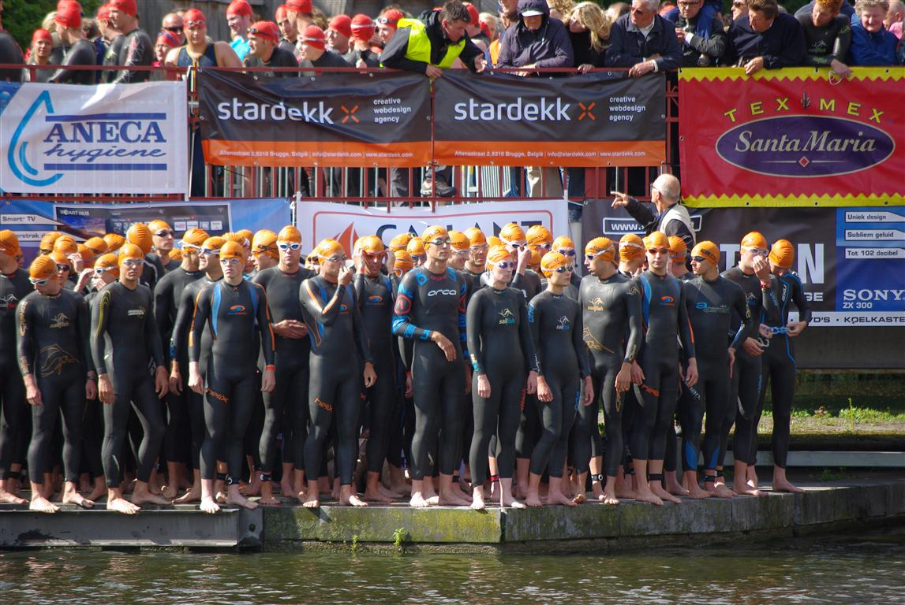

Zaterdag 18 juni stond in Brugge de jaarlijkse City Triatlon op het programma. Een stormachtige zuidwesten wind maakte er een zware wedstrijd van. Willem Brems kwam na 1000m als eerste uit de Brugse Reien met in zijn zog Bart Colpaert. Brems deed een vlotte wissel en had ineens aan gaatje van zo'n 20 seconden op Colpaert. De atleet van SMO-Specialized nam 6 km het voortouw in de winderige polders en dan kreeg hij het gezelschap van Heemeryck en Goris. Olympiër Axel Zeebroeck miste de aansluiting bij het zwemmen en het duurde bijna 30 km alvorens hij de aansluiting met de kop van de wedstrijd kon maken.
Hannes Vandermoere kende een goede zwembeurt en kwam net voor Michael Dewilde uit het water.
Vanuit de achtergrond wistten Bart Aernouts (2-voudige winnaar) en Michael nog de aansluiting te maken met de kop. Beide atleten kwamen op meer dan 1'50" achterstand uit het water.
Met nog 5 km, van de in totaal 45 fietskilometers, te gaan vormde zich een groep van 6 atleten op reglementaire afstand met Aernouts, Zeebroeck, Goris, Heemeryck, Brems en Dewilde. SMO-Specialized atleet Brems diende in de slotkilomters nog de rol te lossen. De afsluitende loopproef over 10 km in de Brugse binnenstad werd een spannende strijd. Aernouts, Heemeryck en Goris hadden direct een gaatje en gingen dan ook strijden om de podiumplaatsen.
Hier toonde Aernouts zich voor het derde jaar op rij oppermachtig. Heemeryck werd tweede, Goris eindigde als derde. Michael kon zijn inhaalrace niet verderzetten en eindigde als 5e, na Axel Zeebroeck.
Hannes moest tijdens het fietsen wat terrein prijsgeven in de polders, maar kon door een sterk loopnummer nog enkele atleten oprapen. De atleet uit Beernem eindigde als 12e.
Willem heeft de wedstrijd mee gemaakt tijdens de zwemproef, knap standgehouden vooraan tijdens het fietsen tussen de grote kanonnen. Maar de loopproef had hij zich ongetwijfeld anders voorgesteld. Hij eindigde ontgoocheld op een 24e plaats. Zijn conditie zit heel goed. Hopelijk kan hij dit de komende weken verzilveren.
Bij de dames won een sterke Sophie De Grootte voor Marjolein Truyers en Sofie Goos. Sophie is ongetwijfeld de Belgische atlete van de eerste seizoenshelft. Mieke Dupont eindigde als 10e dame.
Uitslag atleten SMO-Specialized:
Michael Dewilde 5e
Hannes Vandermoere 12e
Willlem Brems 24e
David De Puydt 121e
Jurgen Cardon 282e
Michel Welvaert 284e
Sarah Braet 17e dame
Bart Reyniers 476e
Christophe De Rycke 591e
De foto's staan in het album.